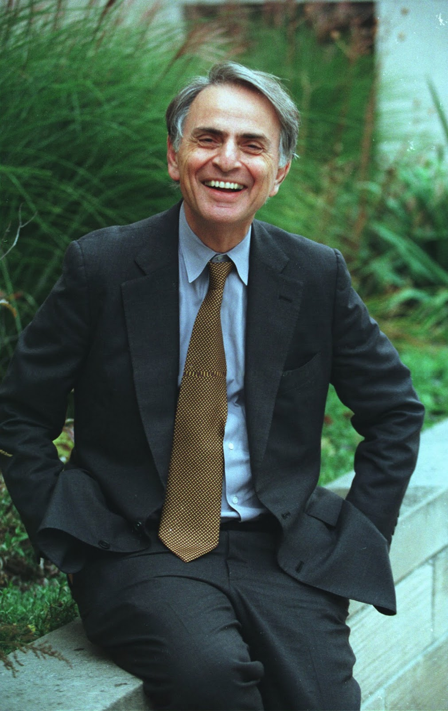

Uma porta para o cosmos
A astrofísica é mais do que um campo do conhecimento: é uma porta de entrada para a compreensão do próprio universo e, ao mesmo tempo, de nós mesmos. Ela vai além da simples observação do céu noturno e busca desvendar os mecanismos que sustentam a formação das estrelas, a dança dos planetas, a vida das galáxias e até as fronteiras do espaço-tempo. Nesse caminho, une a curiosidade humana à precisão científica, transformando perguntas milenares em investigações capazes de revelar a grandeza e a complexidade do cosmos.
Sua jornada começa com os fundamentos da física, aplicados à realidade celeste, mas rapidamente se expande para escalas que desafiam nossa imaginação. Ao explicar a luz das estrelas, a energia do Sol ou o movimento das galáxias, a astrofísica não apenas descreve fenômenos: ela revela conexões profundas entre as leis universais e aquilo que vemos ao erguer os olhos para o céu. Esse entrelaçamento entre teoria e observação abre caminho para conceitos mais avançados, onde relatividade, mecânica quântica e matéria escura se encontram na busca por respostas ainda incompletas.
É justamente nesse encontro entre o conhecido e o desconhecido que a astrofísica ganha sua dimensão mais inspiradora. Como lembrava Carl Sagan, “somos feitos de poeira das estrelas”: cada átomo de nosso corpo carrega a marca de processos cósmicos ancestrais. Ao reconhecer isso, a astrofísica nos convida a refletir sobre nossa origem, nosso lugar no universo e nossa responsabilidade com a raridade da vida na Terra. Assim, ela se apresenta não apenas como uma ciência de fronteira, mas como uma jornada de descoberta contínua, em que cada resposta nos aproxima de novos mistérios e nos lembra da beleza de existir.
“Somos feitos de poeira das estrelas.” — Carl Sagan